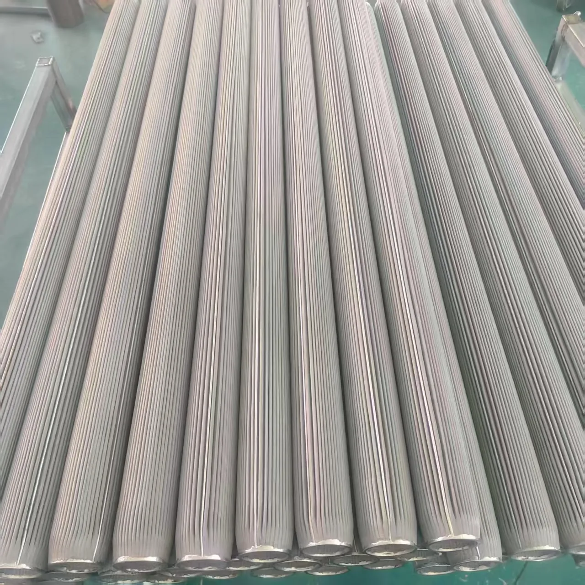
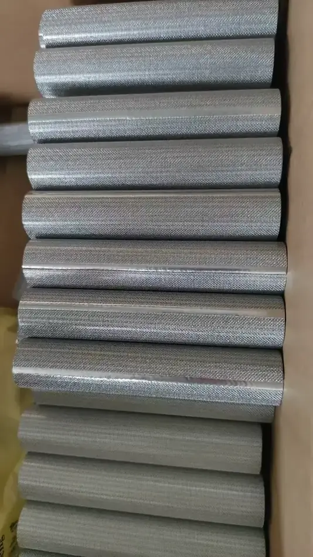
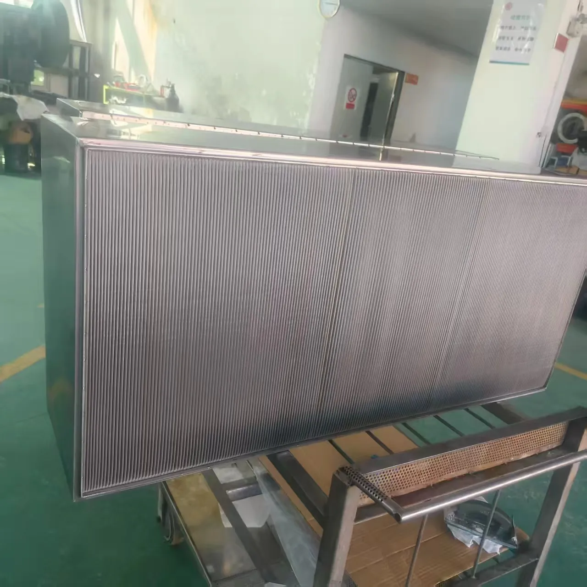
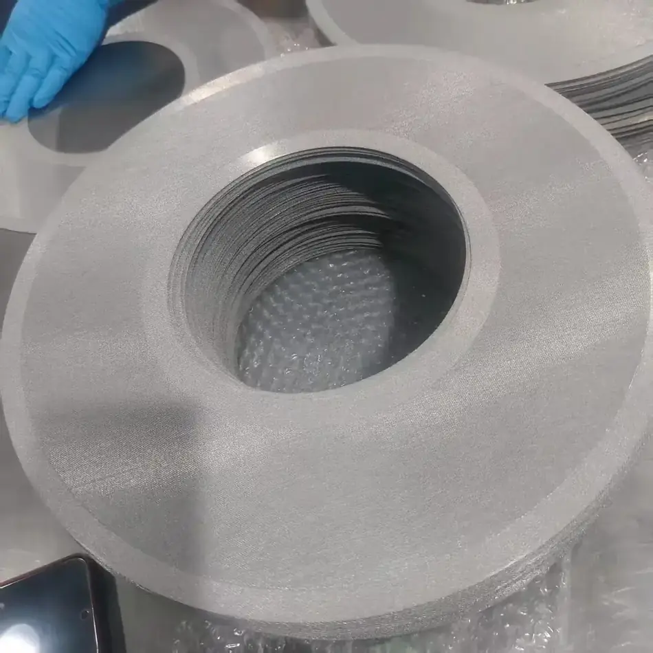
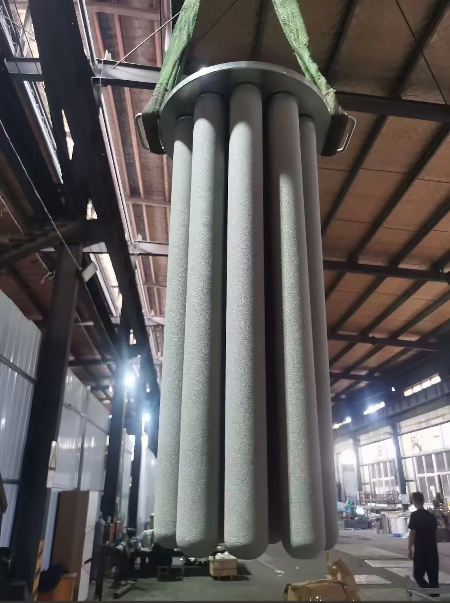
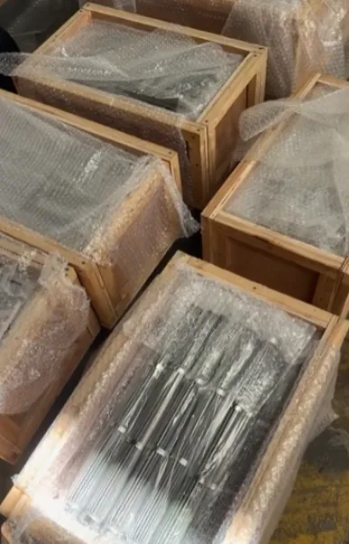

福建强纶新材料股份有限公司 · 新三板 872336
以金属纤维烧结毡、烧结网或多层丝网为滤材，经折波、卷制、骨架支撑与整体烧结焊接成型，直接匹配客户的过滤器与产线接口。
一句话定义：由烧结滤材与金属骨架整体成型的过滤零件，强度高、可反洗再生，用来替代滤纸滤布与易碎金属网。
多层不锈钢丝网经特殊叠层压制、真空烧结而成，具有较高机械强度与整体刚性；耐高温、强度大、精度高、可再生、耐磨耐压、高比表面积、可反复冲洗，加工焊接与组装性能良好。
以金属纤维烧结毡滤芯为例，实际按客户设备接口与工况定制。
| 项目 | 参数 |
|---|---|
| 滤材 | 非对称金属纤维烧结毡（细面朝外） |
| 名义精度 | 10 μm |
| 过滤效率 | 气体过滤 99.9% @ 1μm |
| 孔隙率 | 72% |
| 平均起泡压强 | 3700 Pa（偏差 ±10%） |
| 第一起泡压强 | 不小于 2500 Pa |
| 平均透气度 | 71 L/min/dm² @ 200Pa |
| 部位 | 材料 / 规格 |
|---|---|
| 冲孔网支撑 | 304 |
| 金属纤维烧结毡 | 316L · 10μm · 0.4mm |
| 内部支撑金属丝网 | 304 · 丝径 0.125mm · 48 目 |
| 外部保护金属丝网 | 304 · 丝径 0.224mm · 40 目 |
| 滤芯接头 / 外部套筒 | 304 |
| 滤芯主体长度 | 1500 mm（含接头总长 1725mm） |
| 滤芯外径 OD | 65 mm |
| 密封形式 | 2.5" NPT（大端面朝外） |
* 上表为典型工程配置示例，单根滤芯面积、总过滤面积、文丘里管尺寸等均按设备数量与工况核算；请提供设备编号、工艺单元、介质与温度，由工程师出具配置表。
从折波滤芯、板式滤件到大直径滤盘，按设备接口成套配做并整箱交付。






第一步定滤材：按介质与温度选烧结毡（高精度、大纳污）或烧结网（高强度、易反洗）。
第二步定结构：流量大、压差要求严时选折波增大面积；高粘度熔体工况选叶片滤盘；高温烟气选除尘滤芯或金属滤袋。
第三步定接口：按原设备的接头形式、密封面与安装长度配套，确保直接替换。
可以。金属纤维烧结滤材耐高温、耐腐蚀，可反复清洗再生，寿命远长于滤纸滤布类产品。
取决于纤维品种、纺丝规格与熔体洁净度要求。建议提供产品规格与现用滤材情况，由强纶工程师结合叶片滤盘与烧结滤芯给出精度方案。
可以。提供图纸或实物样品即可测绘复刻，公司已有多个进口替代批量供货案例。
支持。可根据过滤精度、工况温度、介质、尺寸与接口等参数定制并提供样品测试。
可提供检验报告，检测项目包括精度、气泡点、透气度等；具体以订单约定为准。